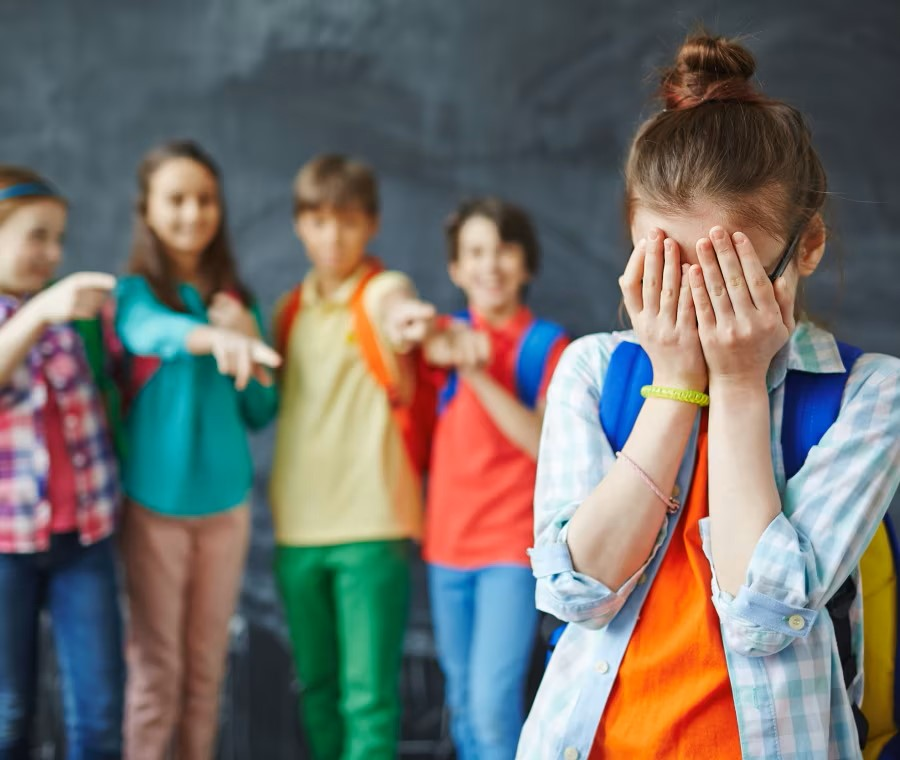

Con bullismo si indica una forma di comportamento sociale di tipo violento, prevaricatorio e intenzionale, tanto di natura fisica che psicologica, ripetuto nel corso del tempo e attuato nei confronti di persone percepite come più deboli dal soggetto che perpetra uno o più atti in questione.
Il bullismo come fenomeno sociale e deviante è oggetto di studio tra gli esperti delle scienze sociali, della psicologia giuridica, clinica, dell'età evolutiva e di altre discipline affini. Il termine viene usato per descrivere il fenomeno soprattutto in ambito scolastico, sebbene non esista una definizione univoca per gli studiosi. Qualora tali atti siano perpetrati via internet si parla di cyberbullismo.
Nella letteratura scientifica si tende a distinguere tra bullismo diretto e bullismo indiretto. Il primo è caratterizzato da una relazione diretta tra vittima e bullo e viene generalmente esercitato attraverso violenze fisiche e/o verbali, mentre il bullismo indiretto, che tende ad attaccare e colpire prevalentemente le relazioni sociali della vittima, mira alla sua emarginazione e al suo isolamento. Entrambe le forme di bullismo possono trovare ospitalità ed essere poste in essere tanto nel mondo reale che in quello virtuale (cyberbullismo). Il bullismo diretto è caratterizzato da una relazione diretta tra vittima e bullo e a sua volta può essere catalogato come.
Il bullismo indiretto è meno visibile di quello diretto, ma non meno pericoloso, e tende a danneggiare la vittima nelle sue relazioni con le altre persone, escludendola e isolandola per mezzo soprattutto del bullismo psicologico e, quindi, con pettegolezzi e diffamazioni sul suo conto. Alcune tipologie di bullismo possono consistere in condotte che si pongono a cavallo tra le due fattispecie, come ad esempio:
Gli effetti del bullismo possono essere gravi e permanenti. Il collegamento tra bullismo e violenza ha attirato un'attenzione notevole dopo il massacro della Columbine High School nel 1999. Due ragazzi armati di fucili e mitragliatori uccisero 13 studenti e ne ferirono altri 24 per poi suicidarsi. Un anno dopo un rapporto ufficiale della CIA ha messo in luce ben 37 tentativi pianificati da altrettanti ragazzi in diverse scuole statunitensi, per i quali il bullismo aveva giocato un ruolo chiave in almeno due terzi dei casi. Si stima che circa il 60-80% del totale del bullismo a scuola stia evolvendo verso forme inattese in senso stragistico e terroristico. Molti criminologi, ad esempio, si sono soffermati sull'incapacità della folla di reagire ad atti di violenza compiuti in pubblico, a causa del declino della sensibilità emotiva che può essere attribuito al bullismo. Quando, infatti, una persona veste i panni di bullo, assume anche uno status che lo rende meno sensibile al dolore, fino al punto che anche gli attendenti incominciano ad accettare la violenza come un evento socialmente conveniente. A tal proposito, l'Anti-Bullying Centre at Trinity College di Dublino è intenta ad approfondire le conseguenze del bullismo sugli aggressori stessi, sia minorenni sia adulti, i quali sono più soggetti a soffrire di una serie di disturbi quali depressione, ansia, deficit di autostima, alcolismo, autolesionismo e altre dipendenze. Durante gli anni 2000, i mass media hanno messo in luce certi casi di suicidio indotto da bullismo omofobico. Si stima che circa 15-25 giovani in Spagna ogni anno tentino il suicidio a causa del bullismo.
Sebbene molto spesso, quando si parla di bullismo, si tenda ad applicare una facile e semplice dicotomia tra leader e gregario, la letteratura in materia è pressoché concorde nel ritenere che non esista un solo tipo di bullo, ma che sia possibile individuarne alcune specifiche tipologie, tutte caratterizzate da proprie peculiarità, caratteristiche e schemi comportamentali. È bene precisare che tracciare il profilo del soggetto che si comporta da bullo non è mai semplice, soprattutto perché, trattandosi di individui in età evolutiva e con un carattere non ancora formato, sono comunque soggetti, con la crescita, a numerosi cambiamenti anche radicali. In genere, si tende a distinguere tra "bullo leader", "bullo cinico", "bullo agitato", "bullo aggressivo", "bullo amico". Sviluppi nella ricerca hanno dimostrato che fattori come l'invidia e il risentimento possono essere indicatori di rischio per diventare un bullo.I risultati sull'autostima, in particolare, sono controversi: mentre alcuni evidenziano un aspetto narcisistico, altri mostrano vergogna o imbarazzo. In alcuni casi, l'origine del bullismo affonda le radici nell'infanzia, magari da parte di chi è stato a sua volta vittima di abusi. Ci sono evidenze che indicano come i bulli abbiano molte più probabilità di avere problemi con la giustizia, e che possa strutturarsi da adulto in una vera e propria carriera criminale, soprattutto nel caso del cosiddetto "bullo cinico". Gli adulti che abusano della propria personalità, che hanno un atteggiamento autorevole, combinato con il bisogno di controllare l'ambiente circostante, hanno anche una maggiore tendenza a sottovalutare le proprie vittime.
I gregari ed il pubblicoIl ruolo del pubblico è determinante: senza il suo apporto la maggior parte dei bulli si sgonfierebbe in breve tempo perché sono i gregari a determinare lo status di capo di un bullo e, in questo modo, sono loro che gli danno la possibilità di sottomettere e umiliare gli altri ragazzi. Non a caso, la letteratura prevalente in materia di contrasto al bullismo focalizza le proprie strategie di prevenzione proprio sul ruolo del pubblico e sull’importanza che quest’ultimo può assumere nel corso di un’aggressione: a seconda della loro condotta, gli spettatori possono rappresentare un facilitatore, alimentando l’aggressività e la violenza del bullo, ricoprendo così il ruolo di gregari e andando a costituire il branco, oppure un deterrente, riducendo fino a eliminare completamente la carica aggressiva; in ogni caso, quasi mai quello che il pubblico assume è un ruolo completamente neutrale e privo di conseguenze. Studi e ricerche, basati prevalentemente sull’analisi di episodi di bullismo ripresi dalle videocamere presenti in molte scuole americane, hanno dimostrato che l’intervento del pubblico a favore della vittima o contro il bullo (identificato con il termine helpful bystanders), è in grado di disinnescare un episodio di bullismo entro dieci secondi dall’inizio. Per questa ragione, in letteratura si tende a distinguere in primo luogo gli “spettatori dannosi” (hurtful bystanders) che istigano il bullo, lo incitano, ridono o partecipano direttamente alle violenze o guardano senza fare nulla giocando il ruolo di “spettatori passivi”. Anche questi ultimi giocano un ruolo importante fornendo al bullo il pubblico di cui ha bisogno e, con il loro silenzio, avallano la condotta sua e del branco che, così, si sente legittimato a proseguire. Gli unici “spettatori utili” (helpful bystanders) sono coloro che intervengono direttamente, scoraggiando il bullo o difendendo la vittima, oppure corrono in cerca di aiuto, adulti, autorità o altri ragazzi, per prestare soccorso alla vittima: tutti questi soggetti giocano un ruolo importante nel contrastare e prevenire efficacemente la diffusione del bullismo.
La VittimaMentre in superficie il bullismo cronico può apparire come una semplice azione di aggressione perpetrata su vittime casuali, il ciclo di riattivazione del bullismo può essere visto come una risposta inadeguata da parte della vittima verso l'aggressore, cioè di una risposta che è vista come stimolante da parte del bullo al fine di porre in essere i propri propositi devianti. D'altro canto, una risposta adeguata presuppone la capacità da parte della vittima di ignorare le attenzioni dell'aggressore oppure di stare al gioco nell'ambito dei processi di comunicazione fra pari. La vittima designata, comunque, deve necessariamente dimostrare in qualche modo di non essere intenzionata a continuare a subire alcuna intimidazione né altri sintomi che possano favorirne l'insorgenza. Quei soggetti, infatti, che riescono subito a scoraggiare chiunque a effettuare nuovi tentativi di approccio deviante, sono coloro che più di tutti riescono a sfuggire dal distruttivo ciclo abusivo. D'altro canto coloro che reagiscono rapidamente a situazioni nelle quali si percepiscono delle vittime, tendono a diventare più frequentemente delle potenziali vittime del bullismo.
Il bullo-vittima o vittima reattivaSecondo uno studio di Barker, Arsenault, Brendgen, Fontan, Maughan l’idea che i bulli e le vittime siano sempre due ruoli separati necessita di revisioni. Nonostante gli attori del fenomeno del bullismo seguano dei veri e propri script, cioè ruoli stabiliti in una sequenza stereotipata, che dipendono dalle caratteristiche personali e dalle aspettative degli altri nelle interazioni sociali, il ruolo del bullo vittima o vittima reattiva risulta più spurio degli altri. Egli appare come il più problematico degli attori coinvolti nel bullismo, il suo profilo è stato definito secondo la teoria socio cognitiva e secondo la teoria dell’attaccamento. Il bullo vittima sembra distinguersi dalle vittime passive per un’incompetenza sociale generalizzata e per l’inefficacia nell’opporsi al suo aggressore. Egli presenta una combinazione del modello reattivo aggressivo (tipico del bullo) e del modello reattivo ansioso (tipico della vittima). Da un lato è oggetto di aggressione da parte dei suoi pari, dall’altro reagisce alle offese subite facendo ricorso alla forza. Ciò che distingue le vittime provocatrici da quelle passive è proprio il tentativo di combattere i loro aggressori. Le vittime reattive di solito risultano sgradite anche agli adulti perché manifestano irrequietezza e distrazione e cercano di prevaricare a loro volta attivando situazioni di elevata conflittualità. Questi spesso hanno un comportamento iperattivo, problemi di concentrazione, un concetto di sé per lo più negativo, risultano ansiose e insicure . Il bullo vittima proviene spesso da ambienti ad alto rischio di abuso e maltrattamento, per questo incontra molte difficoltà nelle esperienze social. Infatti, la vittima provocatrice vive nella relazione con l’altro un’alternanza di status. La vittima reattiva, presentando le difficoltà comuni sia ai bulli che alle vittime, ha maggiore probabilità di sviluppare problemi di adattamento rispetto agli altri attori. In particolare la scarsa modulazione dell’aggressività incide sui comportamenti antisociali che possono incontrare il loro picco durante la tarda adolescenza o durante la giovane età adulta. Secondo Perry, Perry e Kennedy la teoria dell’attaccamento e la teoria socio cognitiva potrebbero spiegare l’incompetenza sociale del bullo vittima e la sua centrale difficoltà di gestione del conflitto. Il bullo vittima potrebbe aver subito vittimizzazione anche in famiglia o in ambienti extrafamiliari. Le possibili conseguenze del bullo-vittima dipendono anche dal ruolo disadattivo delle strategie di interazione di tipo aggressivo. Le conseguenze psicopatologiche cui va incontro la vittima reattiva implicano un’ampia serie di problemi di adattamento e difficoltà comuni sia ai bulli che alle vittime passive. Per queste ragioni la collaborazione tra la scuola e la famiglia assume un ruolo centrale per l’intervento e la sua efficacia.
| Percentuale | Descrizione | Modo Occasionale | Modo Sistematico |
|---|---|---|---|
| Il 22,3% | degli studenti e studentesse delle scuole superiori è stato vittima di bullismo da parte dei pari. | 19,4% | 2,9% |
| Il 18,2% | ha preso parte attivamente a episodi di bullismo verso un compagno o una compagna. | 16,6% | 1,6% |
| L'8,4% | ha subito episodi di cyberbullismo. | 7,4% | 1% |
| Il 7% | ha preso parte attivamente a episodi di cyberbullismo. | 6,1% | 0,09% |
| Percentuale | Descrizione | Modo Occasionale | Modo Sistematico |
|---|---|---|---|
| Il 7% | ha subito prepotenze a causa del proprio background etnico. | 5,5% | 1,5% |
| Il 6,4 | ha prepotenze di tipo omofobico. | 5% | 1,4% |
| Il 5,4% | risulta aver subito prepotenze per una propria disabilità. | 4,2% | 1,2% |